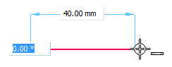
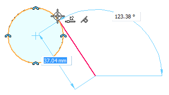
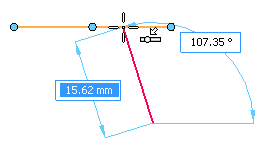
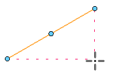
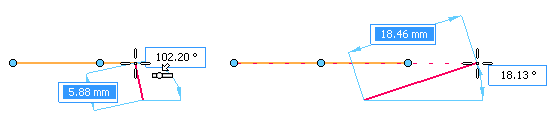
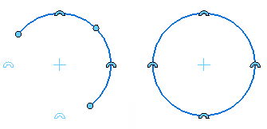
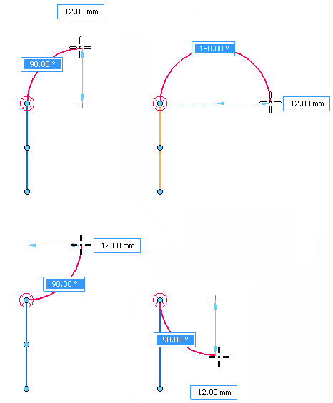

Working with IntelliSketch
IntelliSketch is a dynamic drawing tool used for sketching and modifying elements. IntelliSketch allows you to sketch with precision by specifying characteristics of the design as you sketch.
For instance, IntelliSketch allows you to sketch a line that is horizontal or vertical, or a line that is parallel or perpendicular to another line or tangent to a circle. You can also draw an arc connected to the end point of an existing line, draw a circle concentric with another circle, draw a line tangent to a circle—the possibilities are too numerous to list.
IntelliSketch places dimensions and geometric relationships on any new 2D elements as you draw them. You can use another tool, the Relationship Assistant, to place dimensions and relationships automatically on existing profile elements.
How IntelliSketch works
As you draw, IntelliSketch tracks the movement of the cursor and shows a temporary, dynamic display of the element you are drawing. This temporary display shows what the new element will look like if you click at the current position.
IntelliSketch gives you more information about the element you are drawing by displaying relationships between the temporary, dynamic element and the following:
-
Other elements in the drawing
-
Horizontal and vertical orientations
-
The origin of the element you are drawing
When IntelliSketch recognizes a relationship, it displays a relationship indicator at the cursor. As you move the cursor, IntelliSketch updates the indicator to show new relationships. If a relationship indicator is displayed at the cursor when you click to draw the element, the software applies that relationship to the element. For example, if the Horizontal relationship indicator appears when you click to place the second end point of a line, then the line will be horizontal.

IntelliSketch relationships
You can set the types of relationships you want IntelliSketch to recognize on the Relationships page on the IntelliSketch dialog box. IntelliSketch can recognize one or two relationships at a time. When IntelliSketch recognizes two relationships, it displays both relationship indicators at the cursor.

IntelliSketch locate zone
You do not have to move the cursor to an exact position for IntelliSketch to recognize a relationship. IntelliSketch recognizes relationships for any element within the locate zone of the cursor. The circle around the cursor crosshair or at the end of the cursor arrow indicates the locate zone. You can change the size of the locate zone in the IntelliSketch options dialog.

Alignment indicators
IntelliSketch displays a temporary dashed line to indicate when the cursor position is horizontally or vertically aligned with a key point on an element.

Infinite elements
IntelliSketch recognizes the Point On Element relationship for lines and arcs as if these elements were infinite. In the following example, IntelliSketch recognizes a Point On Element relationship when the cursor is positioned directly over an element and also when the cursor is moved off the element.

Circle and arc keypoints
IntelliSketch displays indicators at the center point, silhouette points, endpoints, and midpoint of an arc. A circle displays indicators at the center and silhouette points. This makes these keypoints easy to locate.

Snapping to points
When drawing and manipulating 2D elements, you can use shortcut keys with QuickPick to snap to keypoints and intersection points. This also applies the point coordinates as input to the command in progress.
Once you have highlighted the element you want to snap to with the cursor, you can use these shortcut keys to snap to points:
-
Midpoint – Press M.
-
Intersection point – Press I.
-
Center point – Press C.
-
Endpoint – Press E.
To learn more, see Selecting and snapping to points.
Sweep angle lock at quadrants
When you draw tangent or perpendicular arcs, the arc sweep angle locks at quadrant points of 0, 90, 180, and 270 degrees. This allows you to draw common arcs without typing the sweep value on the command bar.

Automatic dimensioning
You can use options on the Auto-Dimension page in the IntelliSketch dialog box to automatically create dimensions for new geometry. The page provides several options to control when the dimensions are drawn as well as whether to use dimension style mapping or not.
You can use the Auto-Dimension command as a quick way to turn automatic dimensioning on and off.